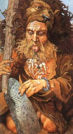

Огма або Огміос, Огмій, в кельтської міфології солнечнолікій бог красномовства, син бога знань Дагда. Огма зображувався у вигляді старця, одягненого в звірину шкуру і збройного палицею. Вуха стояли поруч з богом людей з'єднувалися тонкими ланцюжками з його мовою.
Огма був представником племені богині Дану, основної групи кельтських божеств. Цього бога називали солнечнолікім, його величезна фізична сила поєднувалася з даром провидця і деякими магічними здібностями. Огма ототожнювали з грецьким Гераклом.
Богу Огма приписують винахід древньої системи огам кельтів і піктів, який представляв собою ряд вертикальних або похилих ліній, які перетинають горизонтальну основну лінію. Огамические написи висікали на каменях, скелях, вирізали на металевих, кістяних і дерев'яних виробах. До нашого часу дійшло близько 400 таких написів.
Видатний поет ОДМА, як і всі ірландські боги, був воїном і, подібно грецькому Гермесу і римському Меркурію, відповідав за проведення часу людей племені Дану в потойбічний світ. На відміну від цих богів, функції Огми були набагато приємніше, так як потойбічний світ кельтів був затишне і спокійне місце відпочинку душі перед її наступним відродженням.
У деяких ірландських міфах говориться, що Огма одружився на Етайн, дочки бога-цілителя Діан Кехт. У другій і останній битві при Мойтуре Огма вбив Індеха, сина фоморской богині Домну, царя фоморов, демонічних істот, що викликали на бій молодих богів з Племен богині Дану. У кровопролитній битві, в якому перемога дісталася Племенам богині Дану, ОДМА добув чарівний меч, який міг розповісти про всі подвиги, скоєних з його допомогою.
Огма загинув в битві богів з демонами-фоморами.